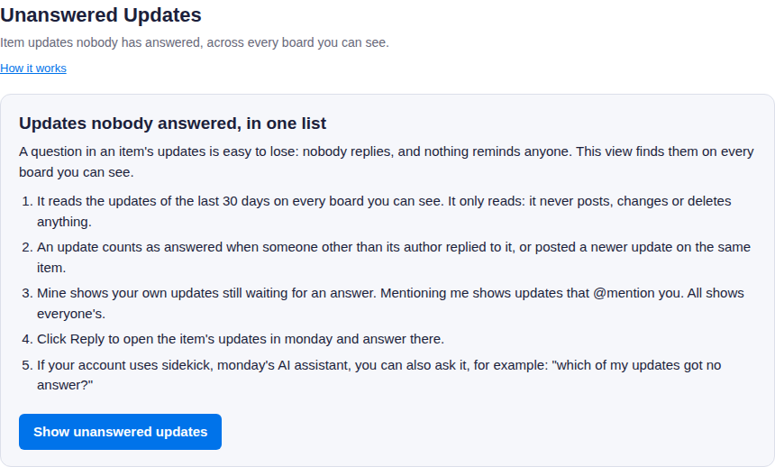
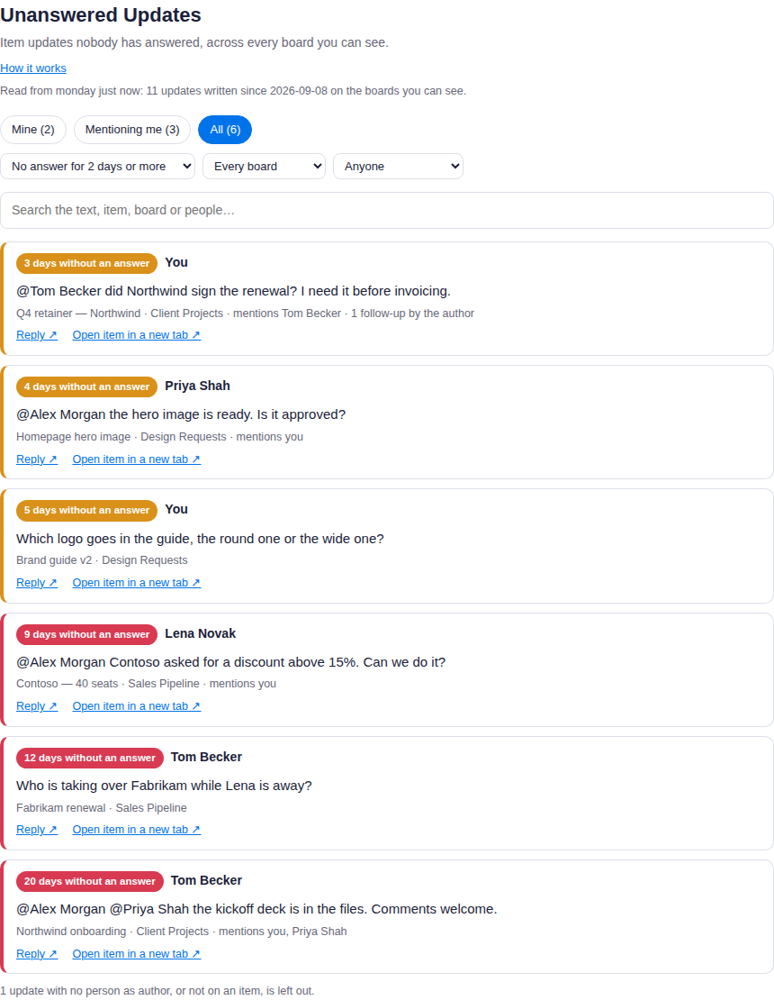
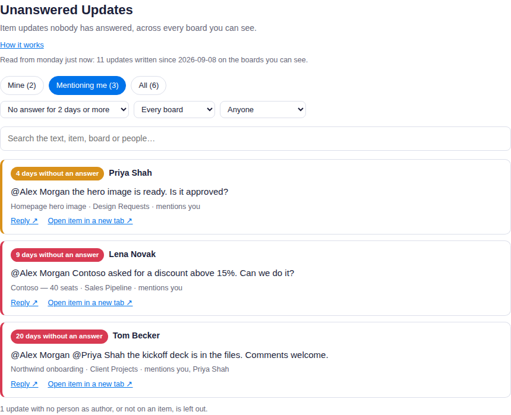

How to use Unanswered Updates
A question written in an item's updates is easy to lose: nobody replies, and nothing reminds anyone. Unanswered Updates lists the updates nobody has answered, from every board you can see, in one place.
Before you start
- You need to be an admin or a member of the monday account. Viewers cannot use the app, because monday does not let viewer accounts use its API.
- It reads the updates on the boards you can see. Someone with access to more boards sees more.
- The app only reads. It never posts, changes or deletes an update, an item or a board.
Install and first use
- Install Unanswered Updates from the monday marketplace.
- Open it from your workspace: click + (Add item to workspace) at the top of the left-side menu, choose Apps, and pick Unanswered Updates. You can also add it as a view on any board; it reads every board either way.
- The first time it opens, a short welcome page explains what it shows. Click Show unanswered updates.
- The app reads the updates of the last 30 days and shows its progress. A busy account can take a minute.

The welcome page, shown the first time.
What counts as unanswered
An update counts as answered when someone other than its author replied to it, or posted a newer update on the same item. Anything else is unanswered. A follow-up from the author ("any news?") does not count as an answer, and neither does a like.
Updates that monday reports with no person as their author, and updates that are not on an item, are left out. The list says how many.
Reading the list
- Mine (the default): updates you wrote that are still waiting for an answer.
- Mentioning me: updates that @mention you, from anyone, still unanswered.
- All: everyone's unanswered updates on the boards you can see.
Each row shows how long the update has waited, who wrote it, its text, its item and board, and whom it mentions.
| Edge | Waiting for |
|---|---|
| grey | less than 3 days |
| amber | 3 to 7 days |
| red | 7 days or more |

The All view, on an invented demo account.
Narrowing it down
- No answer for: 1, 2, 3, 7 or 14 days or more. The default is 2.
- Board and Written by: one board, or one person.
- Search: type any words; an update must match all of them, in its text, its item, its board or the people on it. Capital letters and accents do not matter.

Mentioning me, on the demo account.
Answering
- Reply opens the item's updates in monday, where you answer as usual. Once you have, the update leaves the list the next time the app opens.
- Open item in a new tab opens the item on its board.
Asking sidekick
If your account uses sidekick, monday's AI assistant, it can ask the app for you. For example: "which of my updates got no answer?", "which updates mentioning me are still unanswered?", or "which questions on the Sales Pipeline board have had no answer for a week?". It answers with each update's text, author, age, item and board.
Your data
The app asks monday for read-only access to boards, updates and user names. The list is read in your browser, straight from monday, each time you open the app, and is not stored anywhere. When sidekick asks, the app reads the same updates with a token monday issues for that one request, answers, and keeps nothing. The full privacy policy is linked on the app's marketplace listing.
Support
Write to support@atesensoftware.com.